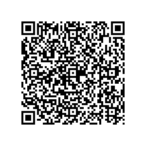

Apunta con el teléfono para abrir la misiónEn un aula de 43 alumnos con tres teléfonos, la misión no le llega a todos. Esta hoja lleva lo mismo en papel. Se fotocopia, se lleva a casa y funciona sin señal y sin luz.
A Marlon le llegó un mensaje: «Te espero en el banco a las tres». Él fue al banco de la plaza, a hacer el trámite. El otro lo esperaba en la banca del parque.
Los dos se fueron a las cuatro sin verse. El trámite se pasó para otro día.
Mira qué hacen las palabras con las ideas. Se llama Filosofía del lenguaje, y pregunta: ¿Cómo cambian las palabras lo que pienso?
Son cuatro cosas. Cada una tiene su prueba. La prueba es una pregunta: se la haces a la frase y ella te contesta cuál es.
Cuenta algo. Se puede estar de acuerdo o no.
La prueba: Preguntate: ¿se puede contestar «es verdad» o «es mentira»?
Deja un hueco. Espera que alguien lo llene.
La prueba: Preguntate: ¿espera una respuesta?
No pide un dato: pide una acción. Un favor, una orden, un ruego.
La prueba: Preguntate: ¿me está pidiendo que yo haga algo?
Sale de golpe. Dice más de quien habla que de la cosa.
La prueba: Preguntate: ¿esto dice cómo se siente el que habla?
Estas ocho parecen una cosa y hacen otra. Lo que lo decide no es la frase: es dónde se dice. Leé la frase, mirá dónde, y después lo que hace.
| La frase | Dónde se dice | Parece | Y hace |
|---|---|---|---|
| «¿Me pasás la sal?» | En la mesa, comiendo. | pregunta | pide — Nadie contesta «sí» y se queda sentado. Se pasa la sal. |
| «¿Podés cerrar el portón?» | Tu mamá, desde la cocina. | pregunta | pide — No pregunta si podés. Te está pidiendo que lo cerrés. |
| «¿Quién dejó esto aquí?» | El maestro, viendo un morral en la puerta. | pregunta | pide — No busca un nombre. Busca que alguien lo quite. |
| «Ya son las seis» | En una visita que se alargó. | afirma | pide — Dice la hora y está pidiendo que se vayan. |
| «La puerta está abierta» | Tu papá, con el frío entrando. | afirma | pide — Nadie le está contando un dato. Le están diciendo: cerrala. |
| «Qué calor hace aquí» | Alguien sentado junto a la ventana cerrada. | exclama | pide — Suelta lo que siente y pide que abran la ventana. |
| «¿Y vos qué hora creés que es?» | A alguien que llegó tarde. | pregunta | afirma — No espera la hora. Está diciendo que llegó tarde. |
| «¡Qué buena idea!» | Con la cara de que no lo es. | exclama | afirma — Suena a elogio y afirma lo contrario. Es ironía. |
Estas cuatro frases están bien escritas. Y dicen dos cosas cada una. Buscá las dos antes de leer la respuesta.
🔧 Se arregla con una pregunta: ¿en cuál de los dos?
🔧 Se arregla diciendo de quién era y a quién se le vendió.
🔧 Se arregla con un dato: ¿usada, o de las de antes?
🔧 Se arregla midiendo: ¿la mitad, o uno entero?
Definir es decir qué entra y qué no. Se falla de dos maneras contrarias, y las dos se comprueban.
Deja entrar cosas que no son.
«Una silla es algo donde uno se sienta.» Entonces una piedra es una silla.
La prueba: Buscá algo que entre y no debería.
Deja fuera cosas que sí son.
«Un ave es un animal que vuela.» Entonces la gallina no es ave.
La prueba: Buscá algo que quede fuera y sí debería entrar.
Entra todo lo que es y nada de lo que no.
«Una silla es un mueble con asiento y respaldo, para una persona.»
La prueba: Probá las dos de arriba. Si aguanta las dos, sirve.
Las dos palabras de cada fila nombran lo mismo. Y no llegan igual. Leelas en voz alta y fijate cuál te cae mejor.
| La cosa | Dicho suave | Dicho fuerte | Las dos |
|---|---|---|---|
| una bolsa que ya usó otro | de segunda mano | usada | Las dos nombran la misma bolsa. |
| el dinero que se fue en algo | lo invirtió | lo gastó | En las dos, la plata ya no está. |
| alguien que come poco | come sanito | no come | Las dos hablan de la misma comida. |
| una casa chiquita | acogedora | apretada | Las dos miden los mismos metros. |
Aquí no se examina la razón: eso fue la unidad anterior. Se examina la frase. Tres de estas cuatro traen trampa. La cuarta no, y por eso está.
Da por hecho lo que todavía no se discutió.
Suena así: «¿Por qué el abono caro rinde más?»
Cuesta: Contestarla ya es aceptar que rinde más.
Se desarma: Contestá la de atrás primero: ¿rinde más?
Le pone a la cosa un nombre que decide antes de mirarla.
Suena así: Llamarle «regalo» a un préstamo que hay que devolver.
Cuesta: Se firma pensando que no se debe nada.
Se desarma: Cambiale el nombre y volvé a mirar: ¿sigue pareciendo lo mismo?
Suena a dato y no dice nada que se pueda medir.
Suena así: «Es de mejor calidad» · «es más natural»
Cuesta: Se paga más por algo que nadie puede contar.
Se desarma: Pedí el número o el ejemplo: ¿mejor en qué, y cuánto?
Nombra con fuerza algo que de verdad es fuerte.
Suena así: «Se cayó el puente» cuando el puente se cayó.
Cuesta: Nada: decirlo flojo sería el error.
Se desarma: No hay que desarmarla. Se comprueba, como todo.
| Palabra | Qué quiere decir |
|---|---|
| significado | Lo que una palabra le hace entender al que la oye. |
| intención | Lo que el que habla quiere lograr al decirlo. |
| ambiguo | Que quiere decir dos cosas, y no se sabe cuál. |
| definir | Decir qué entra y qué no entra en una palabra. |
| retórica | El arte de decir las cosas para que convenzan. |
| literal | Lo que la frase dice, sin lo que insinúa. |
Uno las miró como se miran las cuentas; el otro dijo que cada palabra arrastra la vida de quien la usa. Aquí no hay ni una fecha, y no es un olvido: una fecha que no se puede acreditar no se escribe.
Inglaterra
Se puso a mirar las frases con la lupa con que se miran las cuentas.
Qué hizo: Mostró que una frase puede estar bien escrita y no decir nada claro.
Por qué se le recuerda: Enseña a pedir que la frase se aclare antes de discutirla.
Dato: De ahí viene la filosofía analítica, que el currículo nombra.
España
Dijo que cada palabra arrastra la vida de quien la usa.
Qué hizo: Mostró que dos personas usan la misma palabra y no dicen lo mismo.
Por qué se le recuerda: Enseña a preguntar qué quiere decir el otro, no qué quiero decir yo.
Dato: De ahí viene la hermenéutica, que es el arte de interpretar.
| Materia | Qué le deja |
|---|---|
| ✍️ Español | Le dio la pregunta por la intención. Qué hace la frase, no solo qué dice. Pruébalo hoy: En tu cuaderno: al leer, escribí qué quería lograr el que escribió. |
| 🌎 Ciencias Sociales | Le dio el cuidado con el nombre. Quien pone el nombre ya contó la historia. Pruébalo hoy: Buscá un hecho con dos nombres distintos y mirá qué cambia. |
| 🔢 Matemáticas | Le dio la definición exacta. Un número par entra o no entra, sin discusión. Pruébalo hoy: Definí «número par» y probá si tu definición aguanta las dos pruebas. |
Escribe A si afirma, P si pregunta, M si pide o manda, y E si exclama.
| A, P, M o E | La frase |
|---|---|
| ¡Qué bueno que viniste! | |
| ¿Cuántos años tiene tu abuela? | |
| ¡Ay, me quemé! | |
| Cerrá el portón, por favor | |
| ¿De quién es este cuaderno? | |
| Mi tía vive en Comayagua | |
| ¿A qué hora empieza el partido? | |
| En mi grado somos cuarenta y tres | |
| Pasame el lápiz | |
| El agua de la pila está a veinte grados | |
| No dejes la puerta abierta | |
| ¡Qué frío! |
Une cada prueba con su clase. Escribe la letra en el paréntesis.
| ( ) | La pregunta que se le hace a la frase | La clase |
|---|---|---|
| Preguntate: ¿me está pidiendo que yo haga algo? | a) 📌 Afirma | |
| Preguntate: ¿se puede contestar «es verdad» o «es mentira»? | b) ❓ Pregunta | |
| Preguntate: ¿esto dice cómo se siente el que habla? | c) ✋ Pide o manda | |
| Preguntate: ¿espera una respuesta? | d) ❗ Exclama |
Escuchá en tu casa. Anotá tres frases y qué hace cada una. Después escribí una que diga dos cosas, y la pregunta que la arregla.
| La frase que oí | Qué hace, y por qué |
|---|---|
Escribe SÍ o NO según traiga trampa, y con qué se desarma. Una de las cuatro no trae ninguna.
| ¿Trampa? | Cómo suena | Se desarma con… |
|---|---|---|
| «¿Por qué el abono caro rinde más?» | ||
| Llamarle «regalo» a un préstamo que hay que devolver. | ||
| «Es de mejor calidad» · «es más natural» | ||
| «Se cayó el puente» cuando el puente se cayó. |
Aquí no hay respuestas escritas, y no es un descuido. Estas se averiguan hablando con la gente de tu casa y de tu comunidad.